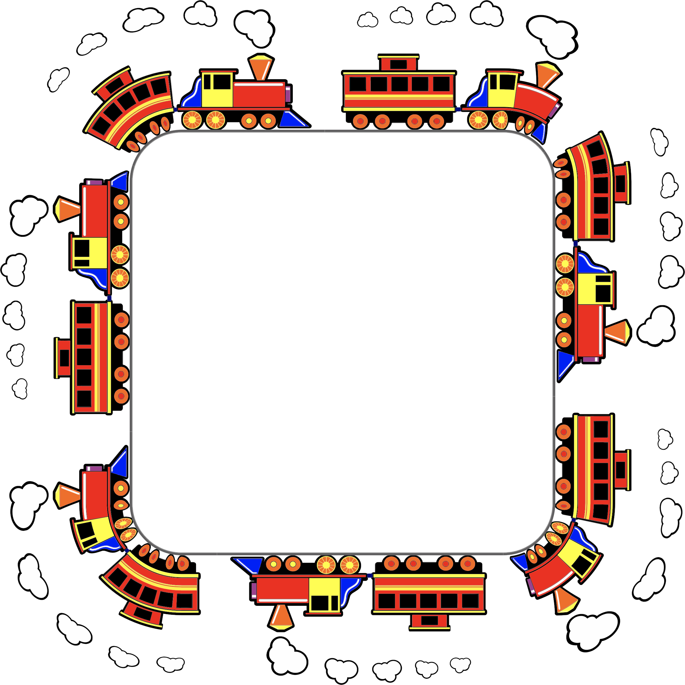

<div class="camera-frame">
  <app-face-detection (success)="toggleBanner()" />
</div>
<div class="frame-wrapper">
  
</div>


<div class="join-banner" [ngClass]="{visible: !showBanner}">
    <span>Join the Ride</span>
    <span>(SPACE OR ENTER)</span>
</div>

<div class="alert-banner" [ngClass]="{visible: showBanner}">
    <span>
      Great, you are now part of the ride.
    </span>
    <span>Find your self on the wagons!!!!</span>
</div>

